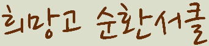
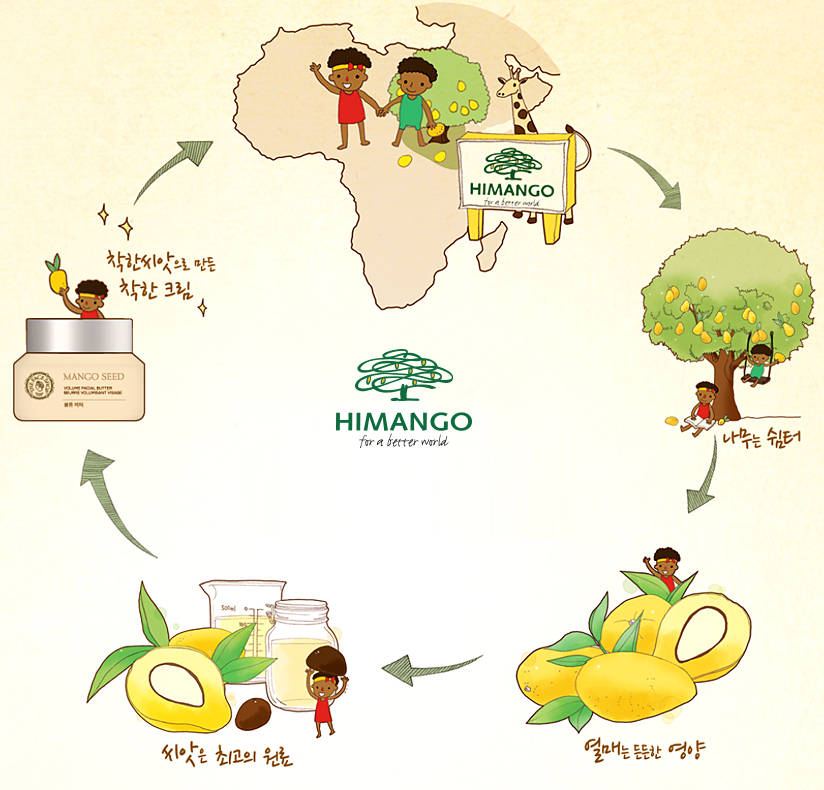

망고나무는 척박한 환경에서도 100년 넘게 장수하는 나무로 바짝 마른 아프리카의 건기에도 무성하게 잘 자란다고 합니다. 또 심은 지 약 4년 후부터 열매를 맺기 시작해 일 년에두 차례 열매를 수확할 수 있습니다. 망고 열매에는 비타민 A, C, 베타카로틴 등이 풍부하게 들어있어 전염병 예방 어린이들의 영양 불균형을 해소하는데 도움을 줍니다. 태양 아래 시원한 그늘을 만들어 더위를 피할 수 있고, 버려진 나뭇가지는 땔감으로 사용되며, 목재는 학교와 집을 짓는데 활용합니다. 6~7년이 지난 망고나무에서는 열매가 200개정도 열리는데 이 수량을 팔면 새끼 염소 한마리를 살 수 있다고 합니다.
